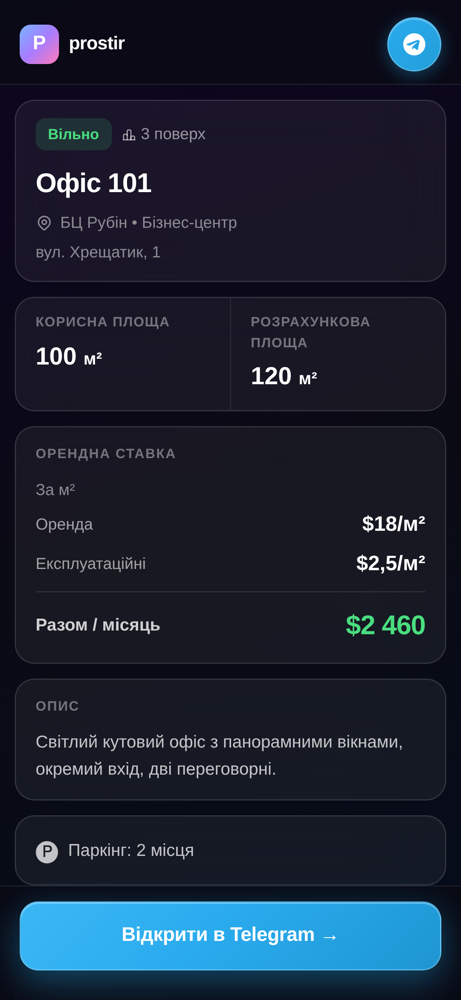

Питання орендаря
Орендар
питає ціну.
У вас
10 секунд.
prostir
Як зараз
Excel цього
не надішле.
Приміщення
м²
Ставка
Офіс 101
120
18
Офіс 102
90
20
Офіс 205
160
17
Клієнт не читає таблиці. Він дивиться на те,
як ви показали обʼєкт.
prostir
Один обʼєкт · одне посилання
Ось що бачить
ваш клієнт

Разом / місяць
$2 460
t.me/prostir_app
Нерухомість,
якою керують
у Telegram.
Обʼєкти, платежі, договори й посилання
для клієнта. Без встановлення.
Відкрити в Telegram →
prostir